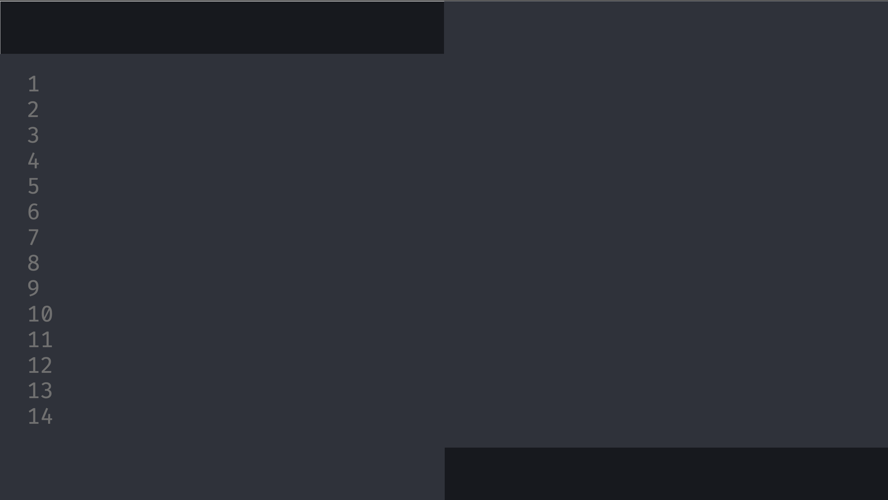

Развитие программных средств для разработки ПО. Популярные IDE в оффлайн и онлайн среде
Быков С.В. ИУ3-31М
План доклада

Что такое IDE?Революционные IDE, повлиявшие на разработку ПОXcodeIntelliJ IDEAEclipseMicrosoft Visual StudioVisual Studio CodeОнлайн IDEOnlineGDBmyCompilerCloud9 IDEGitpodЗаключение
Что такое IDE?
IDE (Integrated Development Environment) - это интегрированная среда разработки программного обеспечения, которая объединяет в себе редактор кода, отладчик, компилятор и другие инструменты, необходимые для создания приложений. Она упрощает процесс разработки, позволяя программистам работать в одном окне и быстро переключаться между различными задачами.
В заключении можно сказать, что IDE - это неотъемлемая часть процесса разработки ПО. Она значительно упрощает жизнь программистов, позволяя им быстро и эффективно создавать качественный код. Однако, выбор между оффлайн и онлайн IDE зависит от индивидуальных потребностей каждого программиста. Важно помнить, что главное - это результат, а не способ его достижения.